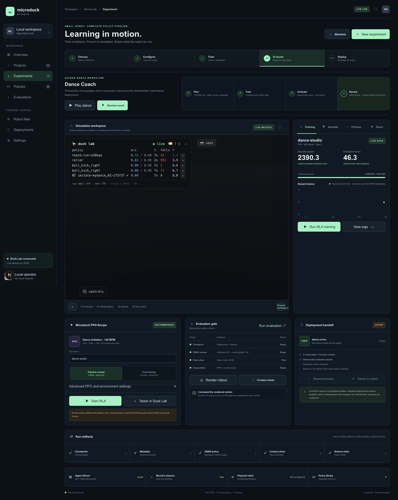
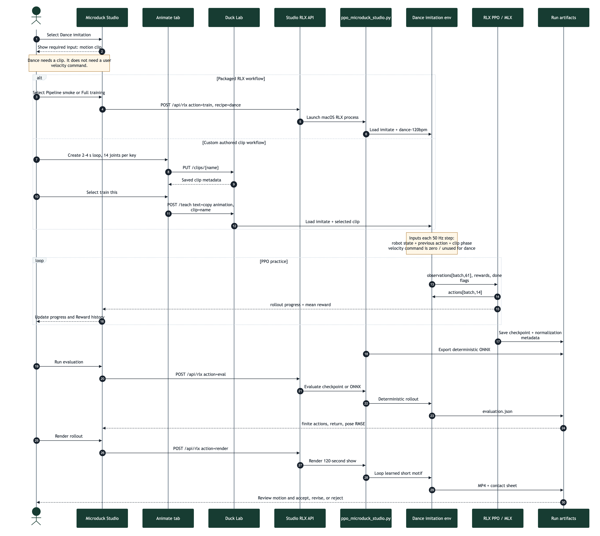
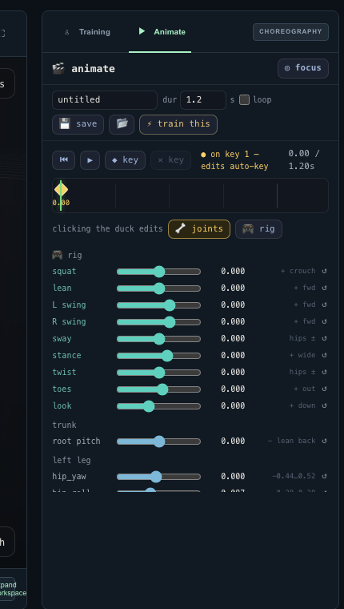
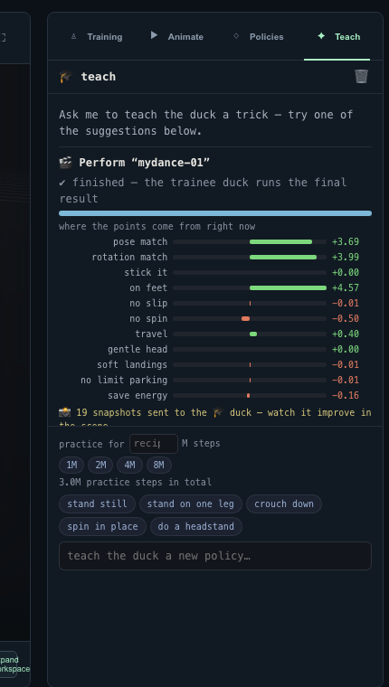
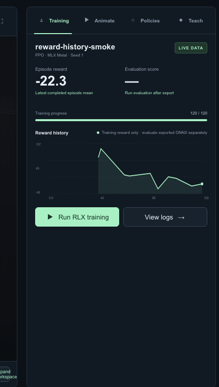
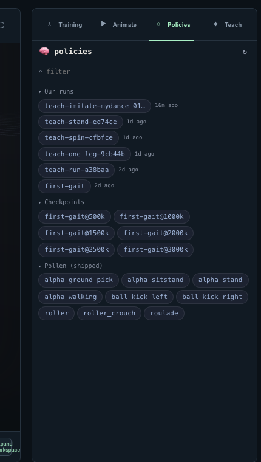

Teach, animate, train, evaluate, and prepare a policy handoff
2026-09-06
Microduck Studio is one browser application for designing motion, training a policy, watching progress, evaluating the result, and downloading artifacts. It is intended for local simulation and rapid experimentation.
Open the Studio at:
http://127.0.0.1:63317The normal workspace launcher starts both parts of the application:
cd /Volumes/ExternalSSD/geoagent/microduck-lab
./restart-lab.shThe services are:
| Service | Address | Purpose |
|---|---|---|
| Microduck Studio | http://127.0.0.1:63317 |
Browser UI, RLX jobs, evaluation, rendering, and downloads |
| Duck Lab | http://127.0.0.1:8788 |
MuJoCo simulation, live poses, clips, policies, and Teach jobs |
| Live stream | ws://127.0.0.1:8788/ws |
Duck poses, statistics, and training progress |
Wait for the Studio to report a live Duck Lab connection before using Animate, Policies, or Teach.
Safety boundary: a locally trained policy is simulation evidence. Do not treat it as ready for a physical robot without separate compatibility, controlled-testing, and safety work. This guide's complete training, evaluation, export, and rendering workflow runs through RLX on macOS and does not require CUDA.
For Dance imitation, PPO needs a motion clip. You do not provide a walking-speed or turning command.
Dance PPO input = robot state + previous action + clip phase
Dance PPO target = poses and timing from the motion clip
Velocity command = unused / zero for this dance recipeThe distinction is:
| Guidance type | What it says | Used by Dance? |
|---|---|---|
| Motion clip | “Put these 14 joints near these poses at these times.” | Yes, required |
| Velocity command | “Move forward, sideways, or turn at this rate.” | No |
| Reward definition | “Match the clip while balancing and avoiding bad contacts.” | Yes, built into the recipe |
| PPO settings | “How much and how aggressively to practice.” | Yes |
Other recipes differ:
| Recipe | Clip | Velocity command |
|---|---|---|
| Dance | Required | Not required |
| Running | Not required | Required and sampled by the environment |
| Stilt walking | Not required | Required and sampled by the environment |
| Swing | Not required | Not required; mechanism rewards define the goal |
The policy interface still contains command slots because every Microduck policy preserves the same 61-observation contract. For Dance, clip phase is placed in reserved body-command slots and irrelevant command values remain zero. Do not invent forward-speed commands for a dance imitation run.
There are two valid paths in the current application:
| Goal | UI path | Clip used | Trainer | Outputs |
|---|---|---|---|---|
| Verify or train the packaged RLX example | Dance → Training → Start RLX | Fixed dance-120bpm |
RLX PPO with MLX | Safetensors, metadata, ONNX, evaluation JSON, MP4, contact sheet |
| Train a clip you authored | Animate → Save → train this → Teach | Your saved clip | Duck Lab imitation trainer | Local behavior run and policy artifacts |
The important limitation is that the current Start
RLX button uses the packaged dance-120bpm clip.
Saving a new clip in Animate does not silently replace
the RLX recipe's clip. Use train this for a custom
clip.
Use this order:
The four tabs beside Training session are different views of this same workflow:
| Tab | Use it for | Main result |
|---|---|---|
| Training | Start and monitor the packaged RLX 120 BPM example | Checkpoint, ONNX export, reward history |
| Animate | Pose the duck and create a keyframed motion clip | Saved clip in microduck_local/clips/ |
| Policies | Find, assign, compare, and reload policies | A selected policy running on a visible duck |
| Teach | Start or monitor behavior training and adjust practice settings | A local behavior run derived from a clip or recipe |

Figure 1. The full Studio workspace. Training, simulation, evaluation, and artifacts remain in one application.

Figure 2. End-to-end sequence. The packaged RLX branch loads
dance-120bpm; the custom branch saves a clip through
Animate and starts imitation through Teach. Both train from clip timing
rather than a velocity command.
Before starting a serious run, record:
| Input | Required value or rule | Example |
|---|---|---|
| Recipe | dance / imitation |
dance |
| Clip | Existing saved clip with valid keyframes | dance-120bpm |
| Clip keys | Strictly increasing time and exactly 14 joint values per key | Five keys |
| Clip mode | Loop for a repeating dance motif | loop: true |
| Run name | Unique, lowercase-safe identifier | groove-a-seed1 |
| Seed | Integer used for repeatability | 1 |
| PPO timesteps | Practice budget, not video duration | 1,000,000 |
| Parallel environments | Number of simultaneous simulated ducks | 16 |
| Learning rate | PPO optimizer step size | 0.0003 |
| Gamma | Future-reward discount | 0.99 |
| Randomization | Domain, observation, delay, and yaw toggles | On for full training |
| Episode duration | One imitation attempt | 4 seconds |
| Render duration | Requested final show duration | 120 seconds |
You do not enter a forward, lateral, or yaw command for Dance.
At 50 Hz, the environment constructs one 61-value observation for each simulated duck. It includes robot state, the previous action, fixed command slots, and the sine/cosine phase of the clip. PPO returns 14 joint actions.
saved clip
-> target 14-joint pose for current phase
robot simulation
-> joint state, velocities, orientation, contacts, previous action
fixed policy contract
-> observations[batch, 61]
RLX actor
-> actions[batch, 14]
MuJoCo
-> next state and rewardThe reward measures clip-pose agreement and physical execution. It can include pose matching, rotation timing, upright support, slip, unwanted spin, impacts, joint-limit use, and motor effort.
| Output | Meaning | Typical Studio location |
|---|---|---|
dance.safetensors |
RLX actor-critic checkpoint | rlx/runs/studio/dance/<run>/ |
dance.safetensors.json |
Seed, PPO settings, randomization, and recipe metadata | Same run directory |
dance.onnx |
Deterministic actor with observation normalization | Same run directory |
evaluation.json |
Deterministic returns, finite checks, and pose RMSE | Same run directory |
render/ep0.mp4 |
Visual rollout, up to the requested 120-second show | Run render directory |
render/ep0_sheet.png |
Diagnostic frames and captions | Run render directory |
| Reward history | Mean reward emitted after each PPO rollout | Live Studio process |
An animation clip says where the joints should be at particular times. It is a reference, not intelligence. The browser interpolates between keyframes, and the training environment resamples the saved motion at 50 Hz.
Each clip contains:
{
"version": 1,
"name": "my-dance",
"duration": 4.0,
"loop": true,
"keys": [
{
"t": 0.0,
"joints": [0, 0, 0, 0, 0, 0, 0, 0, 0, 0, 0, 0, 0, 0],
"rootPitch": 0.0
}
]
}A valid clip has 14 joint values per key, begins with a key at
t = 0, has strictly increasing key times, and has a
duration no longer than 120 seconds. Joint values are clamped to the
robot model's limits when saved.
The policy receives 61 observations and produces 14 joint actions on every control step:
robot state + previous action + clip phase
|
v
neural-network policy
|
v
14 joint actionsThe observation layout stays fixed across behaviors. Clip phase uses existing body-command slots; velocity-command values are unused for Dance. Do not change the 61-observation or 14-action contract for one dance.
Proximal Policy Optimization, or PPO, repeatedly:
PPO does not simply memorize the timeline. It must learn to produce movement while balancing, respecting joint limits, handling delay and noise, and recovering from imperfect states.
| Term | Meaning | Typical value |
|---|---|---|
| Clip duration | Length of the authored motion before it loops or ends | 1 to 4 seconds per motif |
| Episode duration | Length of one simulated training attempt | 4 seconds for imitation |
| Practice budget | Total environment transitions used by PPO | 1M to 3M or more |
| Performance duration | How long the audience watches the dance | 120 seconds in this guide |
These values are not interchangeable. Setting a clip to 120 seconds does not give PPO a useful two-minute memory.
The included dance-120bpm clip is a one-second looping
motif with five keyframes.
dance-120bpm.1.00 s and
loop is enabled.This exercise checks choreography playback only. It does not use a trained policy and does not prove that the duck can physically reproduce the motion.
For a first useful dance, create a short loop between two and four seconds. Short motifs are easier to debug, train, and evaluate than a long sequence.

Figure 3. The Animate tab. Name the clip, set its duration, place keyframes, preview the loop, save it, and then select train this.
groove-a-4s.4.0.0.00. It anchors the clip and
cannot be deleted.1.00.2.00, 3.00, and
4.00.4.00, return close to the starting pose so the loop
has no visible jump.Use Shift while dragging for fine adjustment. Keep both feet near plausible support positions and avoid abrupt full-range joint changes between neighboring keys.
Use this movement plan rather than copying exact angles blindly:
| Time | Pose intention | What to adjust |
|---|---|---|
| 0.00 s | Neutral standing anchor | Balanced hips, modest knee bend |
| 1.00 s | Sway left | Small trunk lean, left knee compression, right-side extension |
| 2.00 s | Center and dip | Symmetric squat, head level, feet planted |
| 3.00 s | Sway right | Mirror the one-second pose |
| 4.00 s | Return to anchor | Match the first pose closely |
Prefer broad, readable movement over extreme angles. The first objective is a stable rhythm that the simulated robot can physically reach.
Before training, verify:
0.00.The most direct path from a custom animation to training is the train this button in Animate.

Figure 4. The Teach tab explains the current behavior, displays reward-term contributions, and controls the next practice budget.
copy the animation.The request sent to Duck Lab is conceptually:
{
"text": "copy the animation",
"clip": "groove-a-4s",
"steps": 3000000
}The steps field is the total PPO practice budget. It is
not dance duration. If you omit it, Duck Lab uses the last saved choice
for that behavior or the recipe default.
Use these values as decision points, not guarantees:
| Budget | Purpose |
|---|---|
| 100,000 steps | Fast integration check; usually not a finished dance |
| 1,000,000 steps | First serious comparison run |
| 3,000,000 steps | Current imitation recipe default and a stronger candidate |
| More than 3,000,000 | Use only after evaluation shows continued improvement |
Change one thing at a time. If a three-million-step run fails badly, increasing the budget without inspecting the motion and rewards may only make the same failure more expensive.
The imitation behavior combines terms for:
Begin with the default weights. Change a weight only when the rendered behavior shows a specific failure that the corresponding term measures.
Examples:
| Observed failure | First investigation |
|---|---|
| Pose resembles the dance but the duck falls | Increase attention to on_feet, inspect whether the
authored pose is physically reachable |
| Feet skate while the upper body looks correct | Inspect and cautiously raise no_slip |
| Duck spins instead of swaying | Inspect and cautiously raise no_spin |
| Duck stays upright but barely moves | Check whether pose matching is strong enough and whether the clip contains visible differences |
| Joints remain at their extremes | Inspect no_limit_parking and reduce extreme authored
poses |
| Reward rises but motion looks wrong | Do not tune from the curve alone; render and inspect term-level behavior |
The Training tab is the status surface. It can show:
The Reward history chart updates from the active RLX job or the active Duck Lab Teach job. RLX emits a mean reward after every PPO rollout, so the chart can advance before a four-second episode completes. A short delay before the first rollout is normal.

Figure 5. Reward history is live training telemetry. It is useful for diagnosis, but it is not a visual-quality or deployment verdict.
Read it as a diagnostic:
When the run name changes, the Studio starts a separate history for the new run. Always pair the chart with deterministic evaluation and rendered motion.
The Studio exposes two related paths:
| Control | What it trains |
|---|---|
| Run RLX training or Start RLX | The packaged dance-120bpm example through the Studio
/api/rlx service |
| Teach in Duck Lab or train this | A Duck Lab behavior, including a custom saved clip |
Use Run RLX training when learning the supplied example or verifying the end-to-end RLX pipeline. Use train this for the animation you authored.
Pipeline smoke uses two environments, four total timesteps, and disables randomization. It checks that the process can start, save a checkpoint, export ONNX, and pass data through the interfaces. It cannot learn a dance.
Full training starts with:
| Setting | Studio default |
|---|---|
| Total timesteps | 1,000,000 |
| Parallel environments | 16 |
| Learning rate | 0.0003 |
| Gamma | 0.99 |
| Rollout steps | 24 |
| Minibatches | 4 |
| Update epochs | 5 |
| Episode duration | 4 seconds |
| Domain randomization | On |
| Observation noise | On |
| Action delay | On |
| Random yaw | On |
The notebook contains an earlier full-run example using learning rate
0.001. The current Studio and command default are
0.0003. For reproducible Studio runs, record the value
shown in the UI and do not assume the notebook value.
The Policies tab is the library of:

Figure 6. Use Policies to locate local runs, checkpoints, and shipped baselines before assigning or comparing them.
Use it to:
For a fair visual comparison:
Evaluation must answer two different questions:
The first is numerical. The second requires visual review.
After a checkpoint exists:
obs[batch,61] -> actions[batch,14].A passing finite rollout proves that the policy can be executed under the tested conditions. It does not prove dance quality.
Reject the run if it earns reward while standing still, falling into a rewarding pose, sliding, spinning, or exploiting contact behavior.
Record this for every candidate:
| Field | Example |
|---|---|
| Run | groove-a-v3 |
| Clip | groove-a-4s |
| Seed | 1 |
| Timesteps | 3,000,000 |
| Reward weights changed | None |
| Evaluation mean return | Measured value |
| Falls or terminations | Measured value |
| Visual verdict | Pass, revise, or reject |
| Main defect | For example, right foot slides after 2.5 s |
| Artifact paths | Checkpoint, ONNX, MP4, contact sheet |
The current clip API accepts a duration up to 120 seconds, but the present imitation setup is not a reliable way to learn one unique 120-second sequence:
0.99 gives PPO an effective credit horizon of
roughly two seconds;Therefore, do not create a 120-second clip, train one million steps, and assume the full choreography was learned.
The reliable current option is a short learned motif that loops for two minutes. A four-second motif repeated 30 times gives a 120-second performance. The native viewer can keep running and resetting until you stop it.
For a more varied show, design and validate short sections separately:
| Section | Show time | Motif length | Repetitions |
|---|---|---|---|
| Intro bounce | 8 s | 2 s | 4 |
| Groove A | 24 s | 4 s | 6 |
| Groove B | 24 s | 4 s | 6 |
| Turn and crouch | 16 s | 4 s | 4 |
| Groove A return | 24 s | 4 s | 6 |
| Finale | 24 s | 4 s | 6 |
| Total | 120 s |
Use this as a design and training plan:
intro, groove-a,
groove-b, turn-crouch,
groove-a-return, and finale.This distinction matters: the table defines a two-minute choreography plan, but the current Studio does not yet provide a playlist that automatically switches among six learned policies on exact musical boundaries.
| Pass | Goal | Suggested action |
|---|---|---|
| 1 | Verify plumbing | Run smoke training for the packaged sample |
| 2 | Prove one motif can be learned | Train groove-a for 1M steps |
| 3 | Improve the motif | Inspect render, change one cause, train 1M to 3M steps |
| 4 | Build a motif library | Repeat for the other short sections |
| 5 | Robustness | Enable randomization and compare fixed seeds |
| 6 | Show assembly | Loop one approved motif or add a future sequencer |
| 7 | Hardware candidate review | Preserve the winning recipe and complete separate compatibility and safety validation |
Use an evidence-driven loop:
observe defect
-> identify whether the clip, reward, physics, or training is responsible
-> change one variable
-> train a new named run
-> evaluate deterministically
-> render and compare
-> keep or reject| Symptom | Likely area | Next action |
|---|---|---|
| Duck cannot reach the authored pose | Animation | Reduce joint extremes and increase transition time |
| Duck never reaches a late movement | Curriculum or episode coverage | Shorten the motif or add phase-aware reset/curriculum support in code |
| Reward increases while duck barely dances | Reward design | Inspect individual terms and strengthen behavior-specific evidence |
| Duck dances only without noise | Robustness | Re-enable randomization one source at a time |
| Good first cycle, poor loop boundary | Animation | Make the last key closely match the first |
| Stable but off beat | Clip timing | Retune key times and rotation timing |
| Falls after a specific pose | Physics and support | Review center of mass, feet, knee bend, and landing speed |
| Training chart is empty | Telemetry timing | Wait for the first PPO rollout, then confirm active run and logs |
| Training chart belongs to another run | Run selection | Check the run name; each run owns separate history |
If rollouts never visit the movement you are rewarding, increasing its reward weight is usually insufficient. Change the starting-state distribution, curriculum, or clip segmentation so PPO actually practices the state.
The browser route POST /api/rlx accepts:
{
"action": "train",
"recipe": {
"runName": "dance-studio",
"profile": "full",
"totalTimesteps": 1000000,
"numEnvs": 16,
"seed": 1,
"learningRate": 0.0003,
"gamma": 0.99,
"domainRand": true,
"obsNoise": true,
"actionDelay": true,
"randomYaw": true
}
}Supported actions are train, eval,
render, and cancel.
The route starts:
rlx/examples/ppo_microduck_studio.py train --recipe danceThat example is intentionally fixed to the packaged
dance-120bpm clip and the imitate behavior.
Training creates a safetensors checkpoint, metadata, and normally an
ONNX export. Evaluation and rendering use the ONNX file when it
exists.
Read status:
GET /api/rlx?experiment=dance&run=dance-studioDownload known artifacts:
GET /api/rlx/artifact?experiment=dance&run=dance-studio&kind=onnx
GET /api/rlx/artifact?experiment=dance&run=dance-studio&kind=video
GET /api/rlx/artifact?experiment=dance&run=dance-studio&kind=sheetThe Studio API restricts run names and artifact kinds. It does not accept an arbitrary shell command.
Use Duck Lab for custom authored clips:
GET http://127.0.0.1:8788/clips
GET http://127.0.0.1:8788/clips/{name}
PUT http://127.0.0.1:8788/clips/{name}
DELETE http://127.0.0.1:8788/clips/{name}
POST http://127.0.0.1:8788/pose
POST http://127.0.0.1:8788/teach
POST http://127.0.0.1:8788/teach/load
POST http://127.0.0.1:8788/teach/weights
POST http://127.0.0.1:8788/teach/stop
POST http://127.0.0.1:8788/teach/clearA custom imitation request can include:
{
"text": "copy the animation",
"clip": "groove-a-4s",
"steps": 3000000,
"weights": {
"pose_match": 4.0,
"on_feet": 5.0
},
"initFrom": "groove-a-v2"
}Use initFrom only when intentionally fine-tuning a
compatible local run. Per-stage stageWeights,
stageSteps, and startStage apply to staged
behavior recipes; they are not required for a normal single-clip
imitation.
The UI is the preferred beginner path. For diagnosis or automation, the fixed RLX example supports:
train -> eval -> export -> view -> renderFrom rlx/, define the verified Python 3.12 overlay:
dance_uv() {
env -u VIRTUAL_ENV UV_PYTHON_PREFERENCE=only-system \
uv run --isolated --no-project \
--python /usr/local/bin/python3.12 \
--with-editable . \
--with-editable ../microduck_local "$@"
}Train the packaged sample:
dance_uv examples/ppo_microduck_studio.py train \
--recipe dance \
--checkpoint runs/studio/dance/dance-studio/dance.safetensors \
--onnx-output runs/studio/dance/dance-studio/dance.onnx \
--total-timesteps 1000000 \
--num-envs 16 \
--num-steps 24 \
--num-minibatches 4 \
--update-epochs 5 \
--gamma 0.99 \
--learning-rate 0.0003 \
--seed 1Evaluate:
dance_uv examples/ppo_microduck_studio.py eval \
--recipe dance \
--policy runs/studio/dance/dance-studio/dance.onnx \
--num-envs 16 \
--eval-steps 500 \
--max-episode-s 4Render:
dance_uv examples/ppo_microduck_studio.py render \
--recipe dance \
--policy runs/studio/dance/dance-studio/dance.onnx \
--output runs/studio/dance/dance-studio/render \
--episodes 1 \
--max-episode-s 4 \
--render-seconds 120 \
--camera three-quarterThe Studio unlocks the artifact handoff only after:
The ONNX export includes observation normalization and preserves the 61-observation to 14-action interface. This makes it suitable as a local handoff artifact, not as automatic permission to operate hardware.
For physical deployment:
Use this checklist for your first serious dance:
Run ./restart-lab.sh, confirm port 8788 is
available, then reload the Studio. Animate, Policies, and Teach depend
on Duck Lab.
Confirm the clip name is dance-120bpm, the play button
shows pause, the timeline advances, and the live simulation is
connected. Reset the simulation if the policy or pose state is
stale.
Save the clip first. Training receives a clip name and the backend loads the corresponding file from the clips directory.
Check that training is active, the selected run name is correct, and the log is still advancing. The RLX chart waits for the first completed PPO rollout; custom Teach telemetry may also include completed-episode points.
This is a failed policy candidate. Render it, identify the exploit or missing motion, revise one cause, and train a new named run.
Shorten it to two-to-four-second motifs. The current four-second episode and PPO credit horizon do not provide reliable coverage of a unique 120-second sequence.
Use the framework-linked Python 3.12 configured by
MICRODUCK_STUDIO_PYTHON. For native viewing, use
mjpython. Offscreen rendering also requires a working
MuJoCo graphics backend and FFmpeg support.
This guide is based on the current repository implementation:
DESIGN.mdduck-viewer/STUDIO.mdduck-viewer/components/Studio.tsxduck-viewer/components/AnimPanel.tsxduck-viewer/components/PolicyPanel.tsxduck-viewer/components/TeachPanel.tsxduck-viewer/app/api/rlx/route.tsduck-viewer/lib/rlx-job.tsmicroduck_local/AGENTS.mdmicroduck_local/src/microduck_local/motion.pymicroduck_local/src/microduck_local/viz_server.pymicroduck_local/src/microduck_local/behaviors/core.pymicroduck_local/src/microduck_local/behaviors/imitate.pyrlx/assets/clips/dance-120bpm.jsonrlx/examples/ppo_microduck_studio.pyrlx/docs/ppo-microduck-dance-guide.mdrlx/docs/ppo_microduck_dance_notebook.ipynbrlx/mylab.md